Code
# 필요한 패키지 설치 (Colab 환경)
!pip install -q opencv-python-headless scikit-image imbalanced-learn opendatasets이주현
November 24, 2025
본 워크북은 흉부 X-ray 영상에서 HOG(Histogram of Oriented Gradients) 특징을 추출하고 SVM 모델을 활용하여 폐렴을 분류하는 전체 파이프라인을 포함합니다. 이론적 기반과 실무 문제 해결 능력을 동시에 강화할 수 있도록 설계되었습니다. 분석가는 영상 전처리 기법의 단계적 개선과 특징 추출의 효과를 정량적으로 비교 분석하는 것을 고려해야 합니다.
진행률: 0% (분석 시작) 🔄 활용도: 학부 4학년 전공 실습
이 워크북을 통해 학습자는 다음을 실습하게 됩니다:
| 단계 | 주요 작업 내용 | 주요 도구/스킬 | 결과물 |
|---|---|---|---|
| 1단계 | 데이터 로드 및 탐색 | OpenCV, Matplotlib | 데이터 분포 시각화 |
| 2단계 | 영상 전처리 (긴 호흡) | OpenCV, CLAHE | 전처리된 영상 |
| 3단계 | 특징 추출 및 모델링 (긴 호흡) | HOG, SIFT, SVM | 최적화된 분류 모델 |
| 4단계 | 성능 평가 | sklearn.metrics | 혼동 행렬, ROC 곡선 |
| 5단계 | 모델 해석 | Feature Importance | 주요 특징 분석 |
| 6단계 | 외부 검증 | Hold-out Test | 일반화 성능 평가 |
| 7단계 | 결과 리포트 | Pandas, Markdown | 최종 분석 보고서 |
이 워크북은 다음 기술/개념을 선행 학습한 학습자를 대상으로 합니다:
📌 데이터셋: Chest X-Ray Images (Pneumonia) 📌 출처: https://www.kaggle.com/datasets/paultimothymooney/chest-xray-pneumonia 📌 배경: 광저우 여성아동의료센터에서 수집된 소아 환자(1-5세)의 흉부 X-ray 영상으로, 정상과 폐렴(세균성/바이러스성)을 구분하는 데 사용됩니다.
| 변수명 | 설명 |
|---|---|
| image | 흉부 X-ray 영상 (JPEG 포맷) |
| label | 분류 레이블 (NORMAL: 정상, PNEUMONIA: 폐렴) |
| split | 데이터 분할 (train/val/test) |
데이터 구성: - Train: 5,216장 (NORMAL: 1,341, PNEUMONIA: 3,875) - Validation: 16장 (NORMAL: 8, PNEUMONIA: 8) - Test: 624장 (NORMAL: 234, PNEUMONIA: 390)
# 기본 라이브러리
import numpy as np
import pandas as pd
import matplotlib.pyplot as plt
import seaborn as sns
from pathlib import Path
import os
import warnings
warnings.filterwarnings('ignore')
# 영상 처리
import cv2
from skimage.feature import hog
from skimage import exposure
# 머신러닝
from sklearn.model_selection import train_test_split, GridSearchCV, StratifiedKFold
from sklearn.preprocessing import StandardScaler
from sklearn.svm import SVC
from sklearn.metrics import (
classification_report, confusion_matrix, roc_auc_score,
roc_curve, accuracy_score, precision_recall_curve, f1_score
)
from imblearn.over_sampling import SMOTE
from imblearn.pipeline import Pipeline as ImbPipeline
# 진행률 표시
from tqdm import tqdm
# 시각화 설정
plt.style.use('seaborn-v0_8-whitegrid')
plt.rcParams['figure.figsize'] = (12, 6)
plt.rcParams['font.size'] = 11
# ========== 한글 폰트 설정 (추가) ==========
import matplotlib.font_manager as fm
# 나눔 폰트 설치
!apt-get -qq -y install fonts-nanum
# 폰트 직접 등록
nanum_font_path = '/usr/share/fonts/truetype/nanum/NanumGothic.ttf'
if os.path.exists(nanum_font_path):
fe = fm.FontEntry(
fname=nanum_font_path,
name='NanumGothic'
)
fm.fontManager.ttflist.append(fe)
plt.rcParams['font.family'] = 'NanumGothic'
plt.rcParams['axes.unicode_minus'] = False
print("✅ 한글 폰트 설정 완료!")
else:
print("⚠️ 한글 폰트를 찾을 수 없습니다.")
# ========== 한글 폰트 설정 끝 ==========
# 재현성을 위한 시드 설정
RANDOM_STATE = 42
np.random.seed(RANDOM_STATE)
print("✅ 모든 라이브러리가 성공적으로 로드되었습니다.")✅ 한글 폰트 설정 완료!
✅ 모든 라이브러리가 성공적으로 로드되었습니다.# Kaggle 데이터셋 다운로드
import opendatasets as od
# Kaggle API 키가 필요합니다 (kaggle.json)
dataset_url = 'https://www.kaggle.com/datasets/paultimothymooney/chest-xray-pneumonia'
od.download(dataset_url)
# 데이터 경로 설정
DATA_DIR = Path('chest-xray-pneumonia/chest_xray')
TRAIN_DIR = DATA_DIR / 'train'
VAL_DIR = DATA_DIR / 'val'
TEST_DIR = DATA_DIR / 'test'
print(f"📁 데이터 디렉토리: {DATA_DIR}")Skipping, found downloaded files in "./chest-xray-pneumonia" (use force=True to force download)
📁 데이터 디렉토리: chest-xray-pneumonia/chest_xraydef count_images(directory):
"""디렉토리 내 클래스별 이미지 수 계산"""
counts = {}
for class_name in ['NORMAL', 'PNEUMONIA']:
class_dir = directory / class_name
if class_dir.exists():
counts[class_name] = len(list(class_dir.glob('*.jpeg'))) + len(list(class_dir.glob('*.jpg')))
else:
counts[class_name] = 0
return counts
# 각 분할별 데이터 수 확인
train_counts = count_images(TRAIN_DIR)
val_counts = count_images(VAL_DIR)
test_counts = count_images(TEST_DIR)
# 데이터 분포 요약
data_summary = pd.DataFrame({
'Split': ['Train', 'Validation', 'Test'],
'NORMAL': [train_counts['NORMAL'], val_counts['NORMAL'], test_counts['NORMAL']],
'PNEUMONIA': [train_counts['PNEUMONIA'], val_counts['PNEUMONIA'], test_counts['PNEUMONIA']],
})
data_summary['Total'] = data_summary['NORMAL'] + data_summary['PNEUMONIA']
data_summary['Imbalance Ratio'] = (data_summary['PNEUMONIA'] / data_summary['NORMAL']).round(2)
print("📊 데이터 분포 요약")
print("=" * 60)
display(data_summary)📊 데이터 분포 요약
============================================================| Split | NORMAL | PNEUMONIA | Total | Imbalance Ratio | |
|---|---|---|---|---|---|
| 0 | Train | 1341 | 3875 | 5216 | 2.89 |
| 1 | Validation | 8 | 8 | 16 | 1.00 |
| 2 | Test | 234 | 390 | 624 | 1.67 |
# 클래스 불균형 시각화
fig, axes = plt.subplots(1, 3, figsize=(14, 4))
splits = ['Train', 'Validation', 'Test']
counts_list = [train_counts, val_counts, test_counts]
colors = ['#2ecc71', '#e74c3c']
for ax, split, counts in zip(axes, splits, counts_list):
bars = ax.bar(['NORMAL', 'PNEUMONIA'], [counts['NORMAL'], counts['PNEUMONIA']], color=colors)
ax.set_title(f'{split} Set', fontsize=12, fontweight='bold')
ax.set_ylabel('Number of Images')
# 막대 위에 숫자 표시
for bar, count in zip(bars, [counts['NORMAL'], counts['PNEUMONIA']]):
ax.text(bar.get_x() + bar.get_width()/2, bar.get_height() + 20,
str(count), ha='center', va='bottom', fontsize=10)
plt.suptitle('📈 클래스별 이미지 분포', fontsize=14, fontweight='bold', y=1.02)
plt.tight_layout()
plt.show()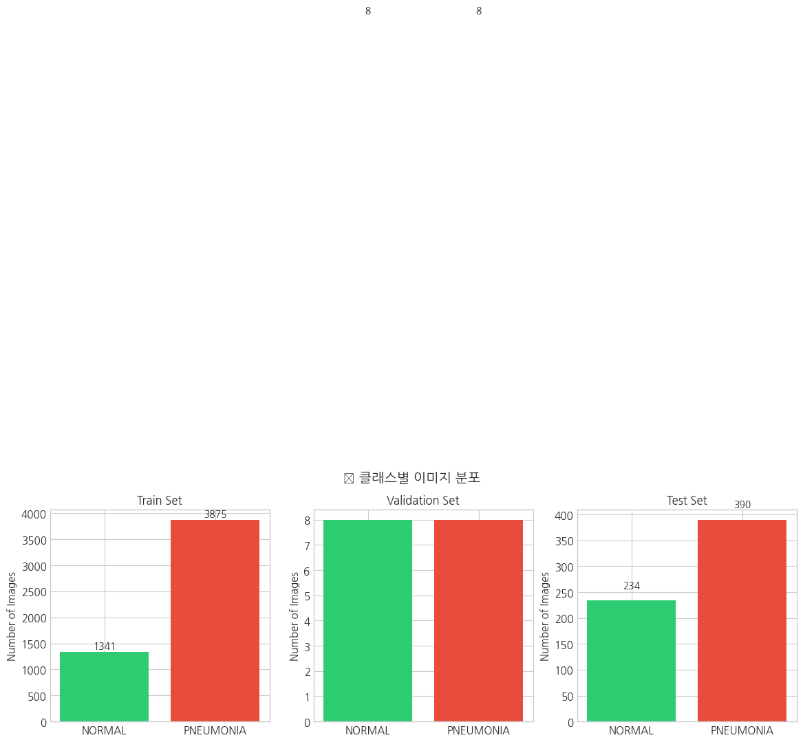
🔍 학습 포인트 #1: 클래스 불균형
Training 데이터에서 PNEUMONIA:NORMAL 비율이 약 2.89:1로 불균형합니다. 이러한 불균형은: - 모델이 다수 클래스(PNEUMONIA)에 편향될 수 있음 - Accuracy만으로는 성능을 정확히 평가하기 어려움 - SMOTE, 클래스 가중치 등의 기법으로 해결 필요
의료 영상에서는 특히 민감도(Sensitivity)가 중요하므로, 폐렴 환자를 놓치지 않는 것이 핵심입니다.
def load_sample_images(directory, class_name, n_samples=3):
"""클래스별 샘플 이미지 로드"""
class_dir = directory / class_name
image_files = list(class_dir.glob('*.jpeg')) + list(class_dir.glob('*.jpg'))
samples = np.random.choice(image_files, min(n_samples, len(image_files)), replace=False)
images = [cv2.imread(str(f), cv2.IMREAD_GRAYSCALE) for f in samples]
return images, samples
# 샘플 이미지 로드
normal_imgs, normal_files = load_sample_images(TRAIN_DIR, 'NORMAL', 4)
pneumonia_imgs, pneumonia_files = load_sample_images(TRAIN_DIR, 'PNEUMONIA', 4)
# 시각화
fig, axes = plt.subplots(2, 4, figsize=(16, 8))
for i, (img, fname) in enumerate(zip(normal_imgs, normal_files)):
axes[0, i].imshow(img, cmap='gray')
axes[0, i].set_title(f'NORMAL\n{img.shape}', fontsize=10)
axes[0, i].axis('off')
for i, (img, fname) in enumerate(zip(pneumonia_imgs, pneumonia_files)):
axes[1, i].imshow(img, cmap='gray')
axes[1, i].set_title(f'PNEUMONIA\n{img.shape}', fontsize=10)
axes[1, i].axis('off')
plt.suptitle('🔬 정상 vs 폐렴 X-ray 영상 비교', fontsize=14, fontweight='bold')
plt.tight_layout()
plt.show()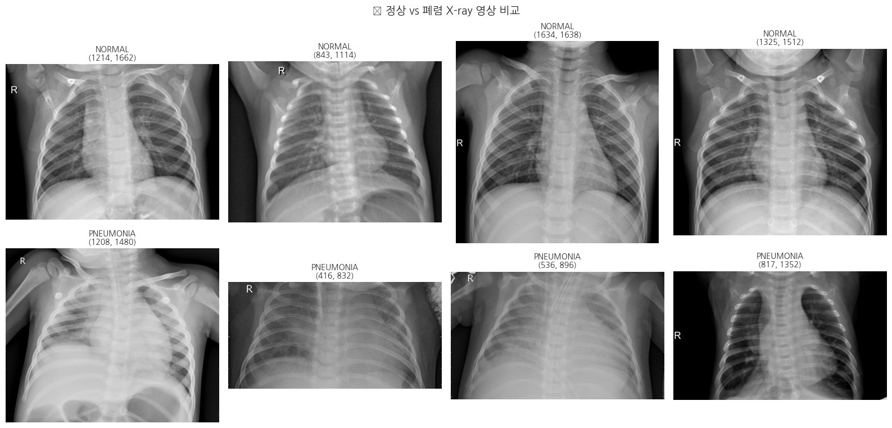
def analyze_image_sizes(directory, sample_size=500):
"""이미지 크기 분포 분석"""
sizes = []
all_files = []
for class_name in ['NORMAL', 'PNEUMONIA']:
class_dir = directory / class_name
files = list(class_dir.glob('*.jpeg')) + list(class_dir.glob('*.jpg'))
all_files.extend(files)
# 샘플링
sample_files = np.random.choice(all_files, min(sample_size, len(all_files)), replace=False)
for f in tqdm(sample_files, desc='이미지 크기 분석'):
img = cv2.imread(str(f), cv2.IMREAD_GRAYSCALE)
if img is not None:
sizes.append({'height': img.shape[0], 'width': img.shape[1]})
return pd.DataFrame(sizes)
size_df = analyze_image_sizes(TRAIN_DIR)
print("📐 이미지 크기 통계")
print("=" * 40)
print(size_df.describe())📐 이미지 크기 통계
========================================
height width
count 500.000000 500.000000
mean 977.750000 1335.398000
std 373.252948 355.931828
min 168.000000 438.000000
25% 683.750000 1062.000000
50% 917.500000 1303.000000
75% 1178.250000 1567.000000
max 2476.000000 2721.000000# 이미지 크기 분포 시각화
fig, axes = plt.subplots(1, 2, figsize=(12, 4))
axes[0].hist(size_df['height'], bins=30, color='steelblue', edgecolor='white', alpha=0.7)
axes[0].axvline(size_df['height'].median(), color='red', linestyle='--', label=f'Median: {size_df["height"].median():.0f}')
axes[0].set_xlabel('Height (pixels)')
axes[0].set_ylabel('Frequency')
axes[0].set_title('Height Distribution')
axes[0].legend()
axes[1].hist(size_df['width'], bins=30, color='coral', edgecolor='white', alpha=0.7)
axes[1].axvline(size_df['width'].median(), color='red', linestyle='--', label=f'Median: {size_df["width"].median():.0f}')
axes[1].set_xlabel('Width (pixels)')
axes[1].set_ylabel('Frequency')
axes[1].set_title('Width Distribution')
axes[1].legend()
plt.suptitle('📊 이미지 크기 분포', fontsize=12, fontweight='bold')
plt.tight_layout()
plt.show()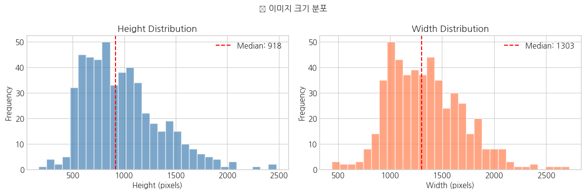
🔍 학습 포인트 #2: 이미지 크기 표준화의 필요성
X-ray 영상의 크기가 다양하므로 특징 추출 전에 모든 이미지를 동일한 크기로 리사이즈해야 합니다. - HOG 특징은 고정된 크기의 입력을 요구 - 너무 작으면 정보 손실, 너무 크면 계산 비용 증가 - 일반적으로 128×128 ~ 256×256 크기가 적절
def analyze_pixel_distribution(images, title):
"""픽셀 강도 분포 분석"""
all_pixels = np.concatenate([img.flatten() for img in images])
return all_pixels
# 클래스별 픽셀 분포
normal_pixels = analyze_pixel_distribution(normal_imgs, 'NORMAL')
pneumonia_pixels = analyze_pixel_distribution(pneumonia_imgs, 'PNEUMONIA')
fig, axes = plt.subplots(1, 2, figsize=(14, 4))
# 히스토그램
axes[0].hist(normal_pixels, bins=50, alpha=0.6, label='NORMAL', color='#2ecc71', density=True)
axes[0].hist(pneumonia_pixels, bins=50, alpha=0.6, label='PNEUMONIA', color='#e74c3c', density=True)
axes[0].set_xlabel('Pixel Intensity')
axes[0].set_ylabel('Density')
axes[0].set_title('Pixel Intensity Distribution by Class')
axes[0].legend()
# 박스플롯
box_data = pd.DataFrame({
'NORMAL': pd.Series(normal_pixels).sample(10000, random_state=42),
'PNEUMONIA': pd.Series(pneumonia_pixels).sample(10000, random_state=42)
})
box_data.boxplot(ax=axes[1])
axes[1].set_ylabel('Pixel Intensity')
axes[1].set_title('Pixel Intensity Boxplot')
plt.suptitle('🎨 클래스별 픽셀 강도 분포 비교', fontsize=12, fontweight='bold')
plt.tight_layout()
plt.show()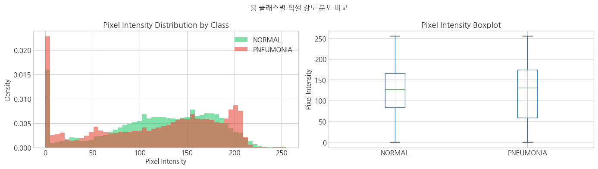
# 전처리 파라미터 설정
IMG_SIZE = (128, 128) # HOG 특징 추출에 적합한 크기
def basic_preprocess(image, target_size=IMG_SIZE):
"""
기본 전처리: 리사이즈 + Min-Max 정규화
"""
# 리사이즈
resized = cv2.resize(image, target_size, interpolation=cv2.INTER_AREA)
# Min-Max 정규화 (0-1 범위)
normalized = resized.astype(np.float32) / 255.0
return normalized
# 샘플 이미지에 기본 전처리 적용
sample_img = normal_imgs[0]
basic_processed = basic_preprocess(sample_img)
fig, axes = plt.subplots(1, 3, figsize=(12, 4))
axes[0].imshow(sample_img, cmap='gray')
axes[0].set_title(f'Original\n{sample_img.shape}')
axes[0].axis('off')
axes[1].imshow(basic_processed, cmap='gray')
axes[1].set_title(f'Basic Preprocessed\n{basic_processed.shape}')
axes[1].axis('off')
axes[2].hist(basic_processed.flatten(), bins=50, color='steelblue', edgecolor='white')
axes[2].set_xlabel('Pixel Intensity')
axes[2].set_ylabel('Frequency')
axes[2].set_title('Pixel Distribution (Normalized)')
plt.suptitle('📷 기본 전처리 결과', fontsize=12, fontweight='bold')
plt.tight_layout()
plt.show()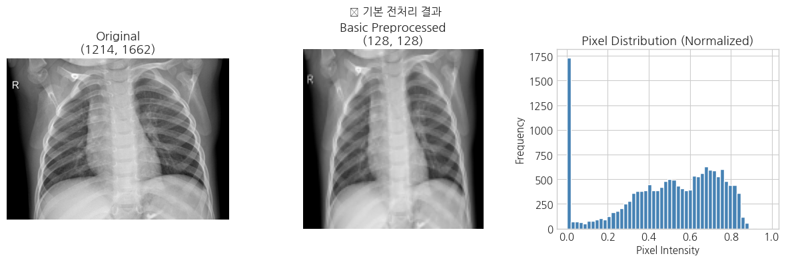
🔍 학습 포인트 #3: 기본 전처리의 한계
단순 정규화만으로는: - 이미지 간 밝기 차이가 여전히 존재 - 대비(Contrast)가 낮은 영역의 정보 손실 - X-ray 특성상 폐 영역의 세부 구조가 불명확
→ 히스토그램 평활화로 대비를 개선해보겠습니다.
def histogram_equalization_preprocess(image, target_size=IMG_SIZE):
"""
고급 전처리: 리사이즈 + 히스토그램 평활화
"""
# 리사이즈
resized = cv2.resize(image, target_size, interpolation=cv2.INTER_AREA)
# 히스토그램 평활화 (0-255 범위에서 수행)
equalized = cv2.equalizeHist(resized)
# 정규화
normalized = equalized.astype(np.float32) / 255.0
return normalized
# 히스토그램 평활화 적용
he_processed = histogram_equalization_preprocess(sample_img)
fig, axes = plt.subplots(2, 3, figsize=(14, 8))
# 이미지 비교
axes[0, 0].imshow(sample_img, cmap='gray')
axes[0, 0].set_title('Original')
axes[0, 0].axis('off')
axes[0, 1].imshow(basic_processed, cmap='gray')
axes[0, 1].set_title('Basic (Resize + Normalize)')
axes[0, 1].axis('off')
axes[0, 2].imshow(he_processed, cmap='gray')
axes[0, 2].set_title('Histogram Equalization')
axes[0, 2].axis('off')
# 히스토그램 비교
axes[1, 0].hist(sample_img.flatten(), bins=50, color='gray', edgecolor='white')
axes[1, 0].set_title('Original Histogram')
axes[1, 1].hist(basic_processed.flatten(), bins=50, color='steelblue', edgecolor='white')
axes[1, 1].set_title('Basic Histogram')
axes[1, 2].hist(he_processed.flatten(), bins=50, color='coral', edgecolor='white')
axes[1, 2].set_title('HE Histogram')
plt.suptitle('📊 히스토그램 평활화 효과', fontsize=12, fontweight='bold')
plt.tight_layout()
plt.show()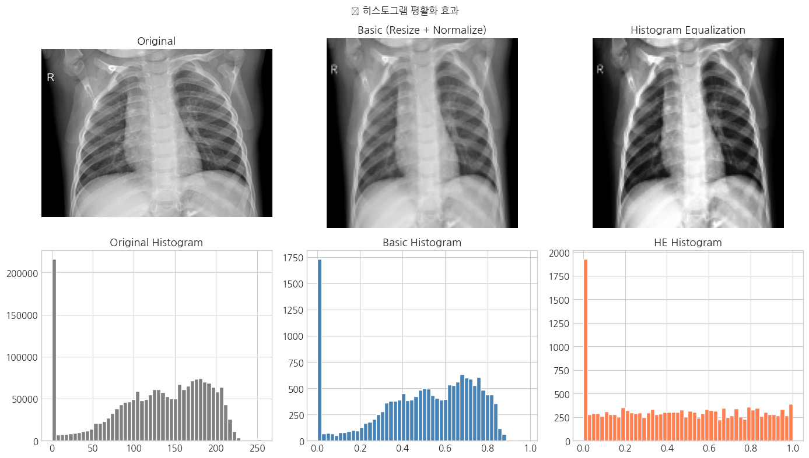
🔍 학습 포인트 #4: 히스토그램 평활화의 특성
히스토그램 평활화의 장점: - 전체적인 대비 향상 - 픽셀 값이 전체 범위로 분산
단점: - 전역적(Global) 방법이라 국소적 대비 개선이 부족 - 폐 영역과 배경의 경계가 과도하게 강조될 수 있음 - 노이즈도 함께 증폭될 수 있음
→ 국소적 대비 개선을 위해 CLAHE를 적용해보겠습니다.
def clahe_preprocess(image, target_size=IMG_SIZE, clip_limit=2.0, tile_size=(8, 8)):
"""
도메인 특화 전처리: 리사이즈 + CLAHE
CLAHE는 의료 영상에서 널리 사용되는 전처리 기법으로,
국소적 대비를 개선하면서 노이즈 증폭을 제한합니다.
Parameters:
- clip_limit: 대비 제한 임계값 (높을수록 대비 증가, 노이즈도 증가)
- tile_size: 국소 영역 크기 (작을수록 더 국소적인 적응)
"""
# 리사이즈
resized = cv2.resize(image, target_size, interpolation=cv2.INTER_AREA)
# CLAHE 적용
clahe = cv2.createCLAHE(clipLimit=clip_limit, tileGridSize=tile_size)
enhanced = clahe.apply(resized)
# 정규화
normalized = enhanced.astype(np.float32) / 255.0
return normalized
# CLAHE 적용
clahe_processed = clahe_preprocess(sample_img)
# 다양한 CLAHE 파라미터 비교
fig, axes = plt.subplots(2, 4, figsize=(16, 8))
clip_limits = [1.0, 2.0, 3.0, 4.0]
for i, clip in enumerate(clip_limits):
processed = clahe_preprocess(sample_img, clip_limit=clip)
axes[0, i].imshow(processed, cmap='gray')
axes[0, i].set_title(f'CLAHE (clip={clip})')
axes[0, i].axis('off')
axes[1, i].hist(processed.flatten(), bins=50, color='teal', edgecolor='white')
axes[1, i].set_title(f'Histogram (clip={clip})')
plt.suptitle('🔧 CLAHE 파라미터에 따른 결과 비교', fontsize=12, fontweight='bold')
plt.tight_layout()
plt.show()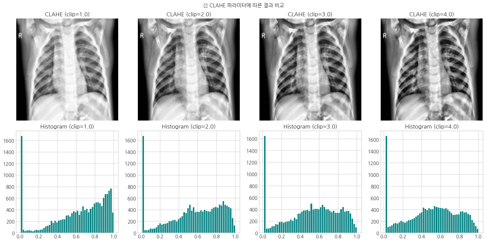
🔍 학습 포인트 #5: CLAHE가 의료 영상에 적합한 이유
CLAHE(Contrast Limited Adaptive Histogram Equalization): - Adaptive: 이미지를 작은 타일로 나누어 각 영역별로 히스토그램 평활화 - Contrast Limited: clip_limit로 대비 증폭을 제한하여 노이즈 억제
의료 영상에서의 장점: 1. 폐 실질 내부의 미세한 음영 차이 강조 2. 폐렴으로 인한 침윤(infiltration) 패턴 가시화 3. 노이즈 과증폭 방지로 안정적인 특징 추출
권장 설정: clip_limit=2.0, tile_size=(8,8)
# 여러 샘플에 대해 전처리 효과 비교
fig, axes = plt.subplots(4, 4, figsize=(16, 16))
sample_images = normal_imgs[:2] + pneumonia_imgs[:2]
labels = ['NORMAL', 'NORMAL', 'PNEUMONIA', 'PNEUMONIA']
for row, (img, label) in enumerate(zip(sample_images, labels)):
basic = basic_preprocess(img)
he = histogram_equalization_preprocess(img)
clahe = clahe_preprocess(img)
axes[row, 0].imshow(img, cmap='gray')
axes[row, 0].set_title(f'{label} - Original')
axes[row, 0].axis('off')
axes[row, 1].imshow(basic, cmap='gray')
axes[row, 1].set_title('Basic')
axes[row, 1].axis('off')
axes[row, 2].imshow(he, cmap='gray')
axes[row, 2].set_title('Histogram Eq.')
axes[row, 2].axis('off')
axes[row, 3].imshow(clahe, cmap='gray')
axes[row, 3].set_title('CLAHE')
axes[row, 3].axis('off')
plt.suptitle('🔍 전처리 방법별 비교 (정상 vs 폐렴)', fontsize=14, fontweight='bold')
plt.tight_layout()
plt.show()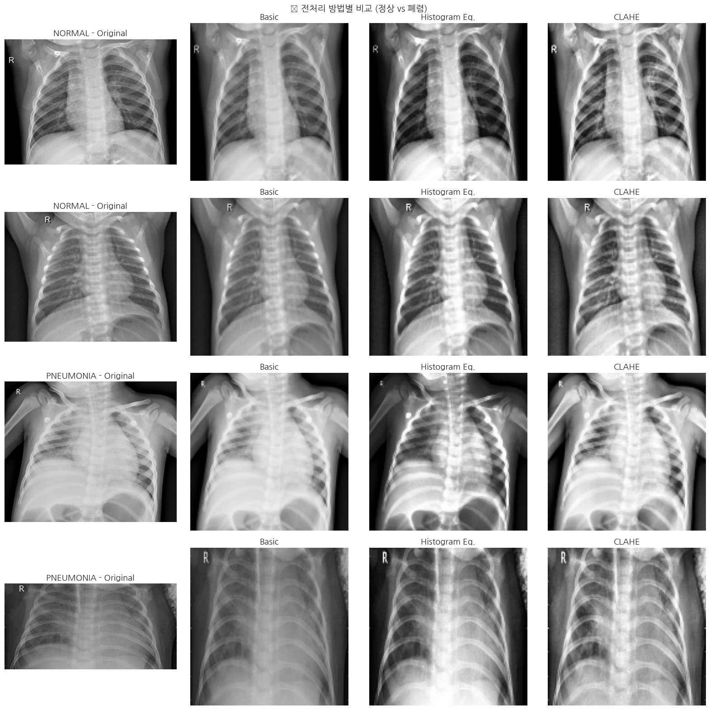
# 전처리 방법 비교 요약 테이블
preprocessing_comparison = pd.DataFrame({
'전처리 방법': ['Basic (Normalize)', 'Histogram Equalization', 'CLAHE'],
'특성': ['단순 스케일링', '전역 대비 향상', '국소 적응적 대비 향상'],
'장점': ['빠른 처리', '전체 대비 개선', '노이즈 억제 + 세부 정보 보존'],
'단점': ['대비 개선 없음', '노이즈 증폭 가능', '파라미터 튜닝 필요'],
'의료 영상 적합성': ['낮음', '중간', '높음']
})
print("📋 전처리 방법 비교")
print("=" * 80)
display(preprocessing_comparison)📋 전처리 방법 비교
================================================================================| 전처리 방법 | 특성 | 장점 | 단점 | 의료 영상 적합성 | |
|---|---|---|---|---|---|
| 0 | Basic (Normalize) | 단순 스케일링 | 빠른 처리 | 대비 개선 없음 | 낮음 |
| 1 | Histogram Equalization | 전역 대비 향상 | 전체 대비 개선 | 노이즈 증폭 가능 | 중간 |
| 2 | CLAHE | 국소 적응적 대비 향상 | 노이즈 억제 + 세부 정보 보존 | 파라미터 튜닝 필요 | 높음 |
def final_preprocess(image, target_size=IMG_SIZE):
"""
최종 전처리 파이프라인 (CLAHE 기반)
"""
# 1. 리사이즈
resized = cv2.resize(image, target_size, interpolation=cv2.INTER_AREA)
# 2. CLAHE 적용
clahe = cv2.createCLAHE(clipLimit=2.0, tileGridSize=(8, 8))
enhanced = clahe.apply(resized)
# 3. 정규화 (0-1 범위)
normalized = enhanced.astype(np.float32) / 255.0
return normalized
print("✅ 최종 전처리 파이프라인: Resize → CLAHE → Normalize")✅ 최종 전처리 파이프라인: Resize → CLAHE → Normalizedef load_and_preprocess_data(data_dir, preprocess_fn, max_samples=None):
"""
데이터 로드 및 전처리
"""
images = []
labels = []
for class_idx, class_name in enumerate(['NORMAL', 'PNEUMONIA']):
class_dir = data_dir / class_name
files = list(class_dir.glob('*.jpeg')) + list(class_dir.glob('*.jpg'))
if max_samples:
files = files[:max_samples // 2]
for f in tqdm(files, desc=f'Loading {class_name}'):
img = cv2.imread(str(f), cv2.IMREAD_GRAYSCALE)
if img is not None:
processed = preprocess_fn(img)
images.append(processed)
labels.append(class_idx)
return np.array(images), np.array(labels)
# 학습 및 테스트 데이터 로드 (계산 시간을 위해 샘플 수 제한)
print("📥 데이터 로드 중...")
X_train_img, y_train = load_and_preprocess_data(TRAIN_DIR, final_preprocess, max_samples=2000)
X_test_img, y_test = load_and_preprocess_data(TEST_DIR, final_preprocess)
print(f"\n✅ 학습 데이터: {X_train_img.shape}, 레이블: {y_train.shape}")
print(f"✅ 테스트 데이터: {X_test_img.shape}, 레이블: {y_test.shape}")
print(f"\n클래스 분포 (Train): NORMAL={sum(y_train==0)}, PNEUMONIA={sum(y_train==1)}")📥 데이터 로드 중...
✅ 학습 데이터: (2000, 128, 128), 레이블: (2000,)
✅ 테스트 데이터: (624, 128, 128), 레이블: (624,)
클래스 분포 (Train): NORMAL=1000, PNEUMONIA=1000def extract_pixel_statistics(image):
"""
기본 픽셀 통계 특징 추출
"""
features = [
np.mean(image), # 평균
np.std(image), # 표준편차
np.median(image), # 중앙값
np.min(image), # 최솟값
np.max(image), # 최댓값
np.percentile(image, 25), # 1사분위수
np.percentile(image, 75), # 3사분위수
image.var(), # 분산
]
return np.array(features)
# 픽셀 통계 특징 추출
print("📊 픽셀 통계 특징 추출 중...")
X_train_pixel = np.array([extract_pixel_statistics(img) for img in tqdm(X_train_img)])
X_test_pixel = np.array([extract_pixel_statistics(img) for img in tqdm(X_test_img)])
print(f"\n✅ 픽셀 통계 특징: {X_train_pixel.shape[1]}개")📊 픽셀 통계 특징 추출 중...
✅ 픽셀 통계 특징: 8개# Baseline 모델: 픽셀 통계 + Linear SVM
scaler_pixel = StandardScaler()
X_train_pixel_scaled = scaler_pixel.fit_transform(X_train_pixel)
X_test_pixel_scaled = scaler_pixel.transform(X_test_pixel)
svm_pixel = SVC(kernel='linear', random_state=RANDOM_STATE)
svm_pixel.fit(X_train_pixel_scaled, y_train)
y_pred_pixel = svm_pixel.predict(X_test_pixel_scaled)
acc_pixel = accuracy_score(y_test, y_pred_pixel)
print("📈 Baseline (픽셀 통계 + Linear SVM) 결과")
print("=" * 50)
print(f"Accuracy: {acc_pixel:.4f}")
print("\nClassification Report:")
print(classification_report(y_test, y_pred_pixel, target_names=['NORMAL', 'PNEUMONIA']))📈 Baseline (픽셀 통계 + Linear SVM) 결과
==================================================
Accuracy: 0.6875
Classification Report:
precision recall f1-score support
NORMAL 0.57 0.68 0.62 234
PNEUMONIA 0.78 0.69 0.73 390
accuracy 0.69 624
macro avg 0.68 0.69 0.68 624
weighted avg 0.70 0.69 0.69 624
🔍 학습 포인트 #6: Baseline 모델의 의미
Baseline 모델(픽셀 통계 + Linear SVM)은: - 가장 단순한 특징으로 시작 - 이후 개선 효과를 정량적으로 비교하는 기준점 - 복잡한 모델이 실제로 가치가 있는지 검증
픽셀 통계만으로는 공간적 패턴(폐렴의 침윤 위치 등)을 포착할 수 없어 성능에 한계가 있습니다.
def extract_hog_features(image, orientations=9, pixels_per_cell=(8, 8),
cells_per_block=(2, 2), visualize=False):
"""
HOG 특징 추출
HOG는 이미지의 국소적 기울기 방향 분포를 히스토그램으로 표현합니다.
Parameters:
- orientations: 기울기 방향 bin 수
- pixels_per_cell: 셀 크기
- cells_per_block: 블록당 셀 수 (정규화 단위)
"""
if visualize:
features, hog_image = hog(
image, orientations=orientations,
pixels_per_cell=pixels_per_cell,
cells_per_block=cells_per_block,
visualize=True,
block_norm='L2-Hys'
)
return features, hog_image
else:
features = hog(
image, orientations=orientations,
pixels_per_cell=pixels_per_cell,
cells_per_block=cells_per_block,
visualize=False,
block_norm='L2-Hys'
)
return features
# HOG 시각화
fig, axes = plt.subplots(2, 4, figsize=(16, 8))
sample_images = [X_train_img[y_train == 0][0], X_train_img[y_train == 1][0]]
sample_labels = ['NORMAL', 'PNEUMONIA']
for row, (img, label) in enumerate(zip(sample_images, sample_labels)):
features, hog_img = extract_hog_features(img, visualize=True)
axes[row, 0].imshow(img, cmap='gray')
axes[row, 0].set_title(f'{label} - Original')
axes[row, 0].axis('off')
axes[row, 1].imshow(hog_img, cmap='gray')
axes[row, 1].set_title(f'HOG Visualization')
axes[row, 1].axis('off')
axes[row, 2].imshow(exposure.rescale_intensity(hog_img, in_range=(0, 10)), cmap='hot')
axes[row, 2].set_title(f'HOG (Enhanced)')
axes[row, 2].axis('off')
axes[row, 3].plot(features[:100])
axes[row, 3].set_title(f'HOG Features (first 100)')
axes[row, 3].set_xlabel('Feature Index')
plt.suptitle('🎯 HOG 특징 추출 시각화', fontsize=14, fontweight='bold')
plt.tight_layout()
plt.show()
print(f"\n📐 HOG 특징 벡터 크기: {len(features)}")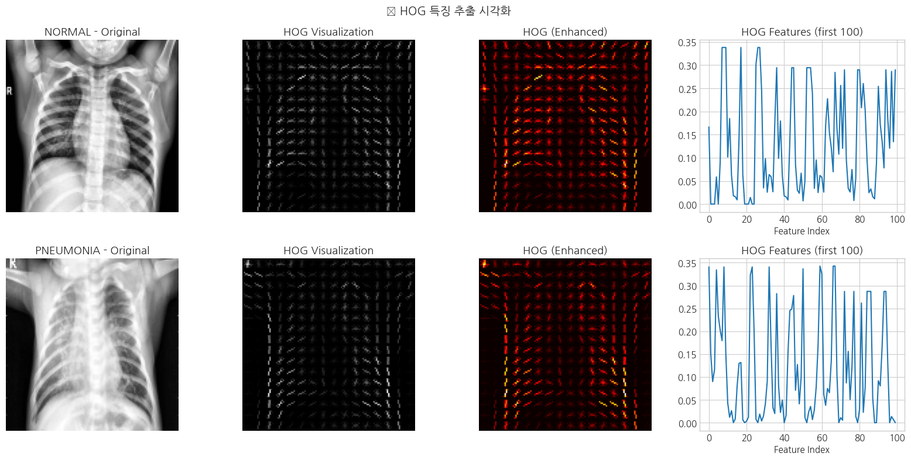
📐 HOG 특징 벡터 크기: 8100🔍 학습 포인트 #7: HOG 특징의 원리
HOG(Histogram of Oriented Gradients): 1. 이미지를 작은 셀로 분할 2. 각 셀에서 기울기 방향 히스토그램 계산 3. 인접 셀들을 블록으로 묶어 정규화
의료 영상에서의 의미: - 폐 경계선, 혈관 패턴 등의 구조적 특징 포착 - 폐렴으로 인한 침윤 패턴의 기울기 변화 감지 - 조명 변화에 강건한 특징
📊 조합된 특징 벡터 크기: 8108
- 픽셀 통계: 8
- HOG: 8100# 스케일링
scaler = StandardScaler()
X_train_scaled = scaler.fit_transform(X_train_combined)
X_test_scaled = scaler.transform(X_test_combined)
# Linear SVM (Baseline)
print("🚀 Baseline 모델 학습 중 (Linear SVM)...")
svm_linear = SVC(kernel='linear', probability=True, random_state=RANDOM_STATE)
svm_linear.fit(X_train_scaled, y_train)
# 예측 및 평가
y_pred_linear = svm_linear.predict(X_test_scaled)
y_prob_linear = svm_linear.predict_proba(X_test_scaled)[:, 1]
acc_linear = accuracy_score(y_test, y_pred_linear)
auc_linear = roc_auc_score(y_test, y_prob_linear)
print("\n📈 Baseline (HOG + Linear SVM) 결과")
print("=" * 50)
print(f"Accuracy: {acc_linear:.4f}")
print(f"AUC-ROC: {auc_linear:.4f}")
print("\nClassification Report:")
print(classification_report(y_test, y_pred_linear, target_names=['NORMAL', 'PNEUMONIA']))🚀 Baseline 모델 학습 중 (Linear SVM)...
📈 Baseline (HOG + Linear SVM) 결과
==================================================
Accuracy: 0.7885
AUC-ROC: 0.9056
Classification Report:
precision recall f1-score support
NORMAL 0.93 0.47 0.63 234
PNEUMONIA 0.76 0.98 0.85 390
accuracy 0.79 624
macro avg 0.84 0.73 0.74 624
weighted avg 0.82 0.79 0.77 624
🔍 학습 포인트 #8: Linear SVM의 특성
Linear SVM: - 고차원 특징 공간에서 효과적 - 해석 가능성이 높음 (계수 분석 가능) - 비선형 패턴 학습에 한계
의료 영상의 복잡한 패턴을 더 잘 포착하기 위해 RBF 커널을 시도해보겠습니다.
# RBF SVM with GridSearchCV
print("🔧 하이퍼파라미터 튜닝 중 (RBF SVM)...")
param_grid = {
'C': [0.1, 1, 10],
'gamma': ['scale', 0.01, 0.001]
}
svm_rbf = SVC(kernel='rbf', probability=True, random_state=RANDOM_STATE)
cv = StratifiedKFold(n_splits=3, shuffle=True, random_state=RANDOM_STATE)
grid_search = GridSearchCV(
svm_rbf, param_grid, cv=cv, scoring='roc_auc', n_jobs=-1, verbose=1
)
grid_search.fit(X_train_scaled, y_train)
print(f"\n✅ 최적 파라미터: {grid_search.best_params_}")
print(f"✅ 최적 CV AUC: {grid_search.best_score_:.4f}")🔧 하이퍼파라미터 튜닝 중 (RBF SVM)...
Fitting 3 folds for each of 9 candidates, totalling 27 fits
✅ 최적 파라미터: {'C': 10, 'gamma': 'scale'}
✅ 최적 CV AUC: 0.9957# 최적 모델로 예측
best_svm = grid_search.best_estimator_
y_pred_rbf = best_svm.predict(X_test_scaled)
y_prob_rbf = best_svm.predict_proba(X_test_scaled)[:, 1]
acc_rbf = accuracy_score(y_test, y_pred_rbf)
auc_rbf = roc_auc_score(y_test, y_prob_rbf)
print("📈 RBF SVM (튜닝 후) 결과")
print("=" * 50)
print(f"Accuracy: {acc_rbf:.4f}")
print(f"AUC-ROC: {auc_rbf:.4f}")
print("\nClassification Report:")
print(classification_report(y_test, y_pred_rbf, target_names=['NORMAL', 'PNEUMONIA']))📈 RBF SVM (튜닝 후) 결과
==================================================
Accuracy: 0.7901
AUC-ROC: 0.9051
Classification Report:
precision recall f1-score support
NORMAL 0.94 0.47 0.63 234
PNEUMONIA 0.76 0.98 0.85 390
accuracy 0.79 624
macro avg 0.85 0.73 0.74 624
weighted avg 0.82 0.79 0.77 624
🔍 학습 포인트 #9: 하이퍼파라미터 튜닝
RBF SVM의 주요 파라미터: - C (정규화): 높을수록 오분류 페널티 증가 → 과적합 위험 - gamma: 결정 경계의 유연성 → 높을수록 복잡한 경계
GridSearchCV를 통해: - 교차 검증으로 일반화 성능 추정 - AUC-ROC 기준으로 최적 파라미터 선택
# SMOTE로 오버샘플링
print("⚖️ SMOTE 적용 중...")
smote = SMOTE(random_state=RANDOM_STATE)
X_train_resampled, y_train_resampled = smote.fit_resample(X_train_scaled, y_train)
print(f"\n원본 학습 데이터: {len(y_train)} (NORMAL: {sum(y_train==0)}, PNEUMONIA: {sum(y_train==1)})")
print(f"리샘플링 후: {len(y_train_resampled)} (NORMAL: {sum(y_train_resampled==0)}, PNEUMONIA: {sum(y_train_resampled==1)})")⚖️ SMOTE 적용 중...
원본 학습 데이터: 2000 (NORMAL: 1000, PNEUMONIA: 1000)
리샘플링 후: 2000 (NORMAL: 1000, PNEUMONIA: 1000)# SMOTE + RBF SVM
print("\n🚀 SMOTE + RBF SVM 학습 중...")
# 최적 파라미터 사용
svm_smote = SVC(
kernel='rbf',
C=grid_search.best_params_['C'],
gamma=grid_search.best_params_['gamma'],
probability=True,
random_state=RANDOM_STATE
)
svm_smote.fit(X_train_resampled, y_train_resampled)
# 예측
y_pred_smote = svm_smote.predict(X_test_scaled)
y_prob_smote = svm_smote.predict_proba(X_test_scaled)[:, 1]
acc_smote = accuracy_score(y_test, y_pred_smote)
auc_smote = roc_auc_score(y_test, y_prob_smote)
print("\n📈 SMOTE + RBF SVM 결과")
print("=" * 50)
print(f"Accuracy: {acc_smote:.4f}")
print(f"AUC-ROC: {auc_smote:.4f}")
print("\nClassification Report:")
print(classification_report(y_test, y_pred_smote, target_names=['NORMAL', 'PNEUMONIA']))
🚀 SMOTE + RBF SVM 학습 중...
📈 SMOTE + RBF SVM 결과
==================================================
Accuracy: 0.7901
AUC-ROC: 0.9051
Classification Report:
precision recall f1-score support
NORMAL 0.94 0.47 0.63 234
PNEUMONIA 0.76 0.98 0.85 390
accuracy 0.79 624
macro avg 0.85 0.73 0.74 624
weighted avg 0.82 0.79 0.77 624
🔍 학습 포인트 #10: SMOTE의 효과
SMOTE(Synthetic Minority Over-sampling Technique): - 소수 클래스의 합성 샘플 생성 - 특징 공간에서 k-NN을 이용해 보간
의료 영상에서의 효과: - 정상 케이스(소수)의 패턴 학습 강화 - Recall(민감도) 향상 기대 - 단, 과적합 주의 필요
# 성능 비교 테이블
results_df = pd.DataFrame({
'Model': ['Pixel Stats + Linear SVM', 'HOG + Linear SVM', 'HOG + RBF SVM (Tuned)', 'HOG + SMOTE + RBF SVM'],
'Accuracy': [acc_pixel, acc_linear, acc_rbf, acc_smote],
'AUC-ROC': ['-', f'{auc_linear:.4f}', f'{auc_rbf:.4f}', f'{auc_smote:.4f}']
})
print("📊 모델 성능 비교 ('긴 호흡' 개선 과정)")
print("=" * 70)
display(results_df)📊 모델 성능 비교 ('긴 호흡' 개선 과정)
======================================================================| Model | Accuracy | AUC-ROC | |
|---|---|---|---|
| 0 | Pixel Stats + Linear SVM | 0.687500 | - |
| 1 | HOG + Linear SVM | 0.788462 | 0.9056 |
| 2 | HOG + RBF SVM (Tuned) | 0.790064 | 0.9051 |
| 3 | HOG + SMOTE + RBF SVM | 0.790064 | 0.9051 |
# 성능 개선 시각화
fig, ax = plt.subplots(figsize=(10, 5))
models = ['Pixel\n(Baseline)', 'HOG +\nLinear SVM', 'HOG +\nRBF (Tuned)', 'HOG + SMOTE\n+ RBF']
accuracies = [acc_pixel, acc_linear, acc_rbf, acc_smote]
colors = ['#bdc3c7', '#3498db', '#2ecc71', '#e74c3c']
bars = ax.bar(models, accuracies, color=colors, edgecolor='white', linewidth=2)
for bar, acc in zip(bars, accuracies):
ax.text(bar.get_x() + bar.get_width()/2, bar.get_height() + 0.01,
f'{acc:.3f}', ha='center', va='bottom', fontsize=11, fontweight='bold')
ax.set_ylabel('Accuracy', fontsize=12)
ax.set_ylim(0, 1.05)
ax.set_title('🚀 모델 성능 개선 과정', fontsize=14, fontweight='bold')
# 개선율 화살표 추가
for i in range(len(accuracies)-1):
improvement = (accuracies[i+1] - accuracies[i]) / accuracies[i] * 100
if improvement > 0:
ax.annotate('', xy=(i+1, accuracies[i+1]), xytext=(i, accuracies[i]),
arrowprops=dict(arrowstyle='->', color='gray', lw=1.5))
plt.tight_layout()
plt.show()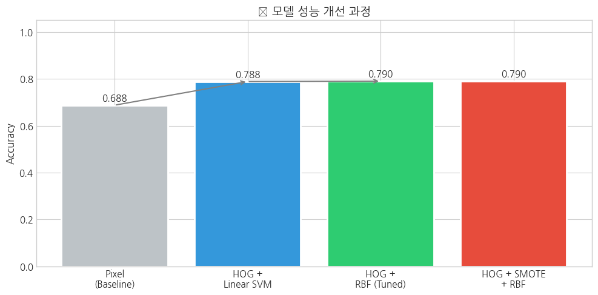
# 최종 모델의 혼동 행렬
fig, axes = plt.subplots(1, 3, figsize=(15, 4))
models_eval = [
('Linear SVM', y_pred_linear),
('RBF SVM (Tuned)', y_pred_rbf),
('SMOTE + RBF SVM', y_pred_smote)
]
for ax, (name, y_pred) in zip(axes, models_eval):
cm = confusion_matrix(y_test, y_pred)
sns.heatmap(cm, annot=True, fmt='d', cmap='Blues', ax=ax,
xticklabels=['NORMAL', 'PNEUMONIA'],
yticklabels=['NORMAL', 'PNEUMONIA'])
ax.set_title(f'{name}')
ax.set_xlabel('Predicted')
ax.set_ylabel('Actual')
plt.suptitle('🎯 혼동 행렬 비교', fontsize=14, fontweight='bold')
plt.tight_layout()
plt.show()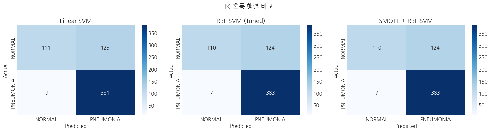
🔍 학습 포인트 #11: 의료 영상에서의 혼동 행렬 해석
의료 진단에서 중요한 지표: - False Negative (FN): 폐렴 환자를 정상으로 오진 → 가장 위험 - False Positive (FP): 정상을 폐렴으로 오진 → 불필요한 추가 검사
따라서 Recall(민감도, Sensitivity)가 특히 중요: - Recall = TP / (TP + FN) - 폐렴 환자 중 실제로 폐렴으로 진단된 비율
fig, ax = plt.subplots(figsize=(8, 6))
# 각 모델의 ROC 곡선
probs_models = [
('Linear SVM', y_prob_linear, 'blue'),
('RBF SVM (Tuned)', y_prob_rbf, 'green'),
('SMOTE + RBF SVM', y_prob_smote, 'red')
]
for name, y_prob, color in probs_models:
fpr, tpr, _ = roc_curve(y_test, y_prob)
auc = roc_auc_score(y_test, y_prob)
ax.plot(fpr, tpr, label=f'{name} (AUC={auc:.3f})', color=color, linewidth=2)
ax.plot([0, 1], [0, 1], 'k--', label='Random (AUC=0.5)')
ax.set_xlabel('False Positive Rate', fontsize=12)
ax.set_ylabel('True Positive Rate (Recall)', fontsize=12)
ax.set_title('📈 ROC Curve Comparison', fontsize=14, fontweight='bold')
ax.legend(loc='lower right')
ax.grid(True, alpha=0.3)
plt.tight_layout()
plt.show()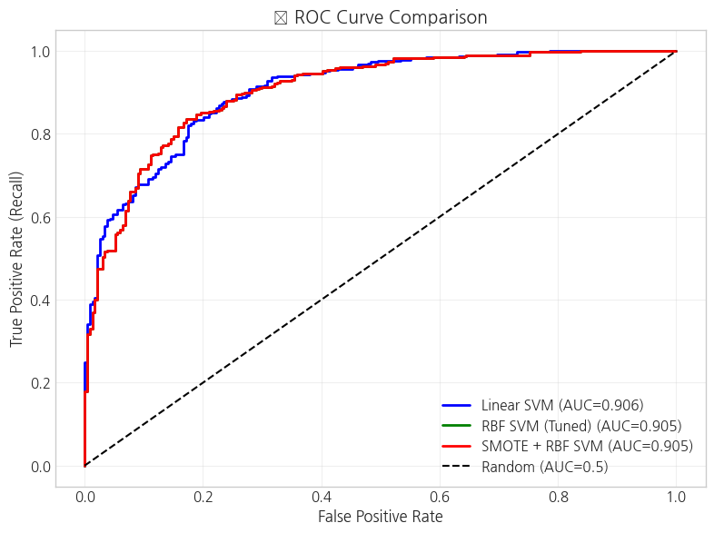
fig, ax = plt.subplots(figsize=(8, 6))
for name, y_prob, color in probs_models:
precision, recall, _ = precision_recall_curve(y_test, y_prob)
ax.plot(recall, precision, label=f'{name}', color=color, linewidth=2)
ax.set_xlabel('Recall', fontsize=12)
ax.set_ylabel('Precision', fontsize=12)
ax.set_title('📊 Precision-Recall Curve', fontsize=14, fontweight='bold')
ax.legend(loc='lower left')
ax.grid(True, alpha=0.3)
plt.tight_layout()
plt.show()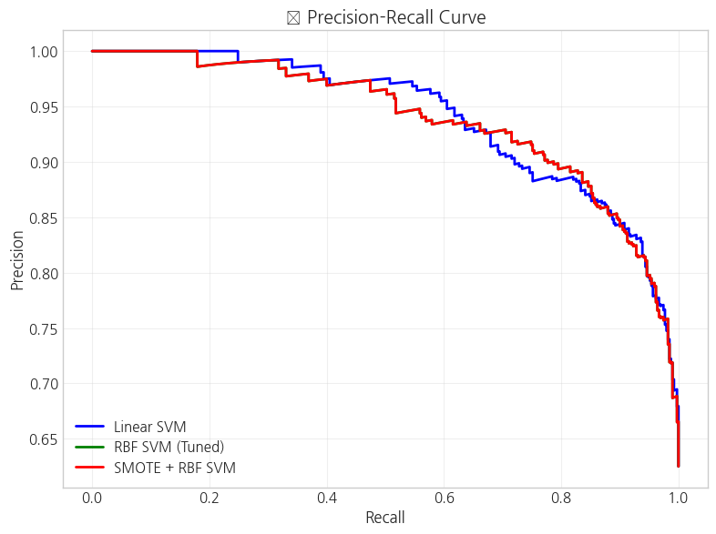
🔍 학습 포인트 #12: ROC vs PR 곡선
ROC 곡선: - 클래스 불균형에 덜 민감 - 전체적인 분류 성능 비교에 적합
Precision-Recall 곡선: - 클래스 불균형 시 더 유용 - 양성 클래스(폐렴) 예측 성능에 초점
의료 영상에서는 두 지표 모두 보고해야 완전한 평가가 가능합니다.
# Linear SVM의 계수 분석
coefficients = svm_linear.coef_.flatten()
# 픽셀 통계 특징 이름
pixel_feature_names = ['Mean', 'Std', 'Median', 'Min', 'Max', 'Q1', 'Q3', 'Var']
# HOG 특징은 인덱스로 표시
hog_feature_names = [f'HOG_{i}' for i in range(len(coefficients) - len(pixel_feature_names))]
all_feature_names = pixel_feature_names + hog_feature_names
# 상위/하위 중요 특징
top_n = 20
sorted_idx = np.argsort(np.abs(coefficients))[::-1]
fig, axes = plt.subplots(1, 2, figsize=(14, 5))
# 픽셀 통계 특징 중요도
pixel_coef = coefficients[:len(pixel_feature_names)]
colors = ['green' if c > 0 else 'red' for c in pixel_coef]
axes[0].barh(pixel_feature_names, np.abs(pixel_coef), color=colors)
axes[0].set_xlabel('|Coefficient|')
axes[0].set_title('Pixel Statistics Feature Importance')
# 전체 상위 특징
top_features = [all_feature_names[i] for i in sorted_idx[:top_n]]
top_coefs = [coefficients[i] for i in sorted_idx[:top_n]]
colors = ['green' if c > 0 else 'red' for c in top_coefs]
axes[1].barh(range(top_n), np.abs(top_coefs), color=colors)
axes[1].set_yticks(range(top_n))
axes[1].set_yticklabels(top_features)
axes[1].set_xlabel('|Coefficient|')
axes[1].set_title(f'Top {top_n} Most Important Features')
axes[1].invert_yaxis()
plt.suptitle('🔍 Linear SVM 특징 중요도 분석', fontsize=14, fontweight='bold')
plt.tight_layout()
plt.show()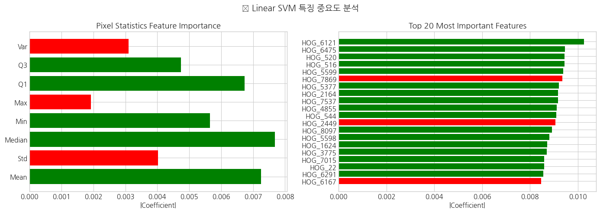
# HOG 계수를 공간적으로 시각화
hog_coefs = coefficients[len(pixel_feature_names):]
# HOG 파라미터에 따른 공간 크기 계산
n_orientations = 9
pixels_per_cell = 8
cells_per_block = 2
img_size = 128
n_cells = img_size // pixels_per_cell # 16
n_blocks = n_cells - cells_per_block + 1 # 15
# 각 블록의 중요도 계산 (방향별 합산)
features_per_block = n_orientations * cells_per_block * cells_per_block # 36
n_total_blocks = n_blocks * n_blocks # 225
block_importance = np.zeros((n_blocks, n_blocks))
for i in range(n_blocks):
for j in range(n_blocks):
block_idx = i * n_blocks + j
start = block_idx * features_per_block
end = start + features_per_block
if end <= len(hog_coefs):
block_importance[i, j] = np.mean(np.abs(hog_coefs[start:end]))
fig, axes = plt.subplots(1, 2, figsize=(12, 5))
# HOG 블록 중요도 히트맵
im = axes[0].imshow(block_importance, cmap='hot', interpolation='nearest')
axes[0].set_title('HOG Block Importance Heatmap')
axes[0].set_xlabel('Block X')
axes[0].set_ylabel('Block Y')
plt.colorbar(im, ax=axes[0])
# 샘플 이미지와 오버레이
sample_img = X_train_img[0]
axes[1].imshow(sample_img, cmap='gray')
# 중요도 오버레이 (리사이즈)
importance_resized = cv2.resize(block_importance, (128, 128), interpolation=cv2.INTER_LINEAR)
axes[1].imshow(importance_resized, cmap='hot', alpha=0.4)
axes[1].set_title('Feature Importance Overlay')
axes[1].axis('off')
plt.suptitle('🗺️ HOG 특징의 공간적 중요도', fontsize=14, fontweight='bold')
plt.tight_layout()
plt.show()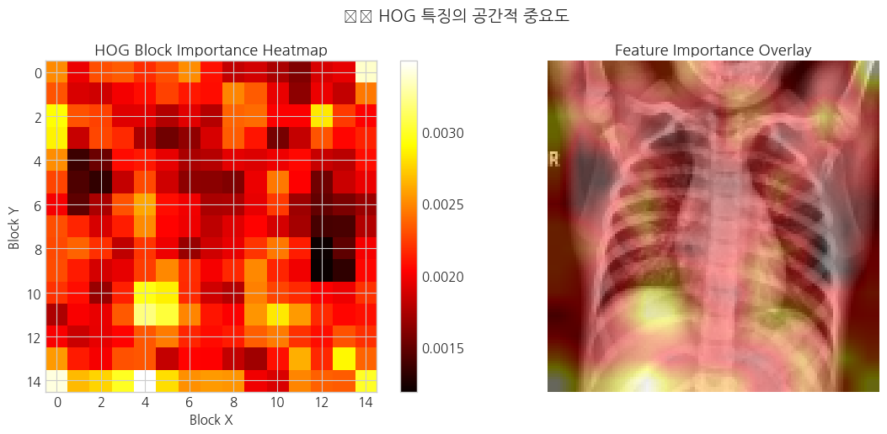
🔍 학습 포인트 #13: 모델 해석의 의미
특징 중요도 분석을 통해: - 모델이 어떤 영역을 주로 보는지 파악 - 의료진이 진단 시 주목하는 영역과 비교 가능 - 모델의 신뢰성 평가에 활용
흉부 X-ray에서 폐렴 진단 시 주목하는 영역: - 폐 하부 (하엽 폐렴이 흔함) - 폐 실질 내부의 음영 변화
# 오분류 케이스 추출
misclassified_idx = np.where(y_pred_smote != y_test)[0]
# False Negative (폐렴을 정상으로 오진)
fn_idx = misclassified_idx[(y_test[misclassified_idx] == 1) & (y_pred_smote[misclassified_idx] == 0)]
# False Positive (정상을 폐렴으로 오진)
fp_idx = misclassified_idx[(y_test[misclassified_idx] == 0) & (y_pred_smote[misclassified_idx] == 1)]
print(f"총 오분류: {len(misclassified_idx)}개")
print(f"False Negative (폐렴→정상): {len(fn_idx)}개")
print(f"False Positive (정상→폐렴): {len(fp_idx)}개")총 오분류: 131개
False Negative (폐렴→정상): 7개
False Positive (정상→폐렴): 124개# 오분류 케이스 시각화
fig, axes = plt.subplots(2, 4, figsize=(16, 8))
# False Negative 샘플
for i, idx in enumerate(fn_idx[:4]):
axes[0, i].imshow(X_test_img[idx], cmap='gray')
axes[0, i].set_title(f'FN: True=PNEUMONIA\nPred=NORMAL\nProb={y_prob_smote[idx]:.2f}', fontsize=9)
axes[0, i].axis('off')
# False Positive 샘플
for i, idx in enumerate(fp_idx[:4]):
axes[1, i].imshow(X_test_img[idx], cmap='gray')
axes[1, i].set_title(f'FP: True=NORMAL\nPred=PNEUMONIA\nProb={y_prob_smote[idx]:.2f}', fontsize=9)
axes[1, i].axis('off')
plt.suptitle('⚠️ 오분류 케이스 분석', fontsize=14, fontweight='bold')
plt.tight_layout()
plt.show()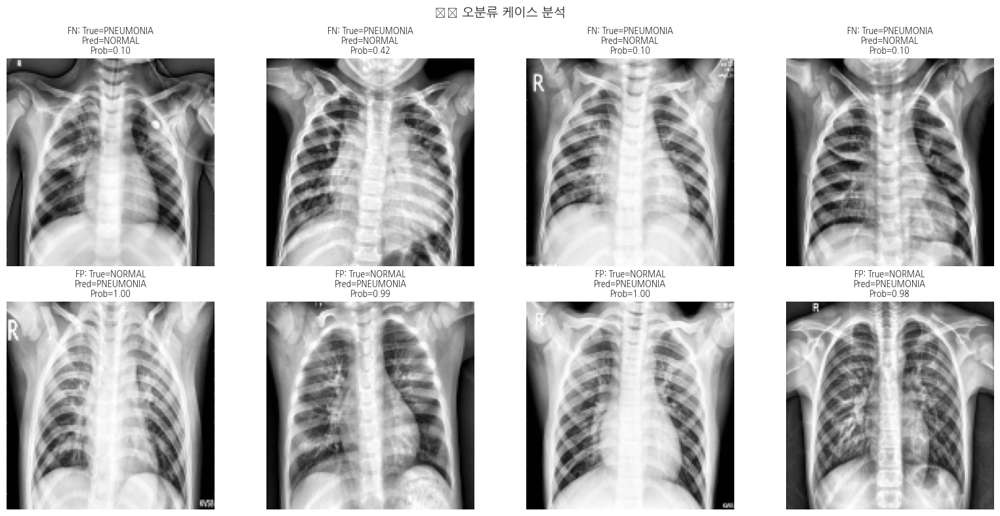
# 테스트셋은 이미 분리되어 있으므로 최종 성능 확인
print("🔬 최종 테스트셋 검증 결과")
print("=" * 60)
# 최종 모델 (SMOTE + RBF SVM)
final_model = svm_smote
y_pred_final = final_model.predict(X_test_scaled)
y_prob_final = final_model.predict_proba(X_test_scaled)[:, 1]
print("\n[SMOTE + RBF SVM - 최종 모델]")
print(f"Accuracy: {accuracy_score(y_test, y_pred_final):.4f}")
print(f"AUC-ROC: {roc_auc_score(y_test, y_prob_final):.4f}")
print(f"F1-Score: {f1_score(y_test, y_pred_final):.4f}")
print("\nClassification Report:")
print(classification_report(y_test, y_pred_final, target_names=['NORMAL', 'PNEUMONIA']))🔬 최종 테스트셋 검증 결과
============================================================
[SMOTE + RBF SVM - 최종 모델]
Accuracy: 0.7901
AUC-ROC: 0.9051
F1-Score: 0.8540
Classification Report:
precision recall f1-score support
NORMAL 0.94 0.47 0.63 234
PNEUMONIA 0.76 0.98 0.85 390
accuracy 0.79 624
macro avg 0.85 0.73 0.74 624
weighted avg 0.82 0.79 0.77 624
# 다양한 임계값에 따른 성능 변화
thresholds = np.arange(0.3, 0.8, 0.05)
results_threshold = []
for thresh in thresholds:
y_pred_thresh = (y_prob_final >= thresh).astype(int)
cm = confusion_matrix(y_test, y_pred_thresh)
tn, fp, fn, tp = cm.ravel()
sensitivity = tp / (tp + fn) if (tp + fn) > 0 else 0
specificity = tn / (tn + fp) if (tn + fp) > 0 else 0
precision = tp / (tp + fp) if (tp + fp) > 0 else 0
f1 = 2 * precision * sensitivity / (precision + sensitivity) if (precision + sensitivity) > 0 else 0
results_threshold.append({
'Threshold': thresh,
'Sensitivity': sensitivity,
'Specificity': specificity,
'Precision': precision,
'F1': f1
})
threshold_df = pd.DataFrame(results_threshold)
# 시각화
fig, ax = plt.subplots(figsize=(10, 5))
ax.plot(threshold_df['Threshold'], threshold_df['Sensitivity'], 'b-', label='Sensitivity', linewidth=2)
ax.plot(threshold_df['Threshold'], threshold_df['Specificity'], 'g-', label='Specificity', linewidth=2)
ax.plot(threshold_df['Threshold'], threshold_df['F1'], 'r--', label='F1-Score', linewidth=2)
# 최적 임계값 표시 (F1 기준)
best_idx = threshold_df['F1'].idxmax()
best_thresh = threshold_df.loc[best_idx, 'Threshold']
ax.axvline(best_thresh, color='gray', linestyle=':', label=f'Best Threshold={best_thresh:.2f}')
ax.set_xlabel('Threshold', fontsize=12)
ax.set_ylabel('Score', fontsize=12)
ax.set_title('⚖️ 임계값에 따른 성능 변화', fontsize=14, fontweight='bold')
ax.legend()
ax.grid(True, alpha=0.3)
plt.tight_layout()
plt.show()
print(f"\n✅ 최적 임계값 (F1 기준): {best_thresh:.2f}")
print(threshold_df.loc[best_idx])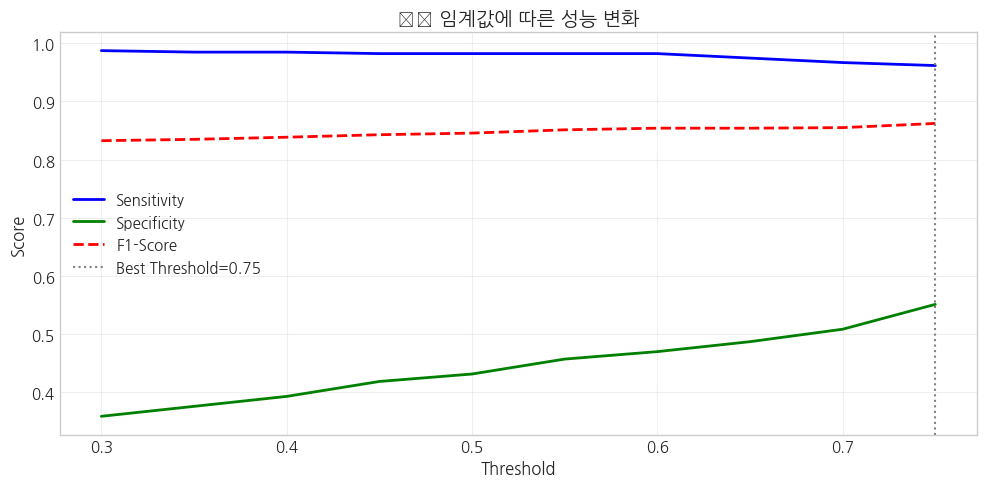
✅ 최적 임계값 (F1 기준): 0.75
Threshold 0.750000
Sensitivity 0.961538
Specificity 0.551282
Precision 0.781250
F1 0.862069
Name: 9, dtype: float64🔍 학습 포인트 #14: 임계값 최적화
의료 진단에서 임계값 선택: - 민감도 우선 (임계값 ↓): 폐렴 환자를 놓치지 않음 → 스크리닝 용도 - 특이도 우선 (임계값 ↑): 오진 최소화 → 확진 용도 - F1 균형점: 전체적인 성능 균형
실제 임상에서는 사용 목적에 따라 임계값을 조정해야 합니다.
def bootstrap_confidence_interval(y_true, y_prob, metric_fn, n_bootstrap=1000, ci=0.95):
"""
부트스트랩을 이용한 신뢰구간 계산
"""
scores = []
n = len(y_true)
for _ in range(n_bootstrap):
idx = np.random.choice(n, n, replace=True)
score = metric_fn(y_true[idx], y_prob[idx])
scores.append(score)
alpha = (1 - ci) / 2
lower = np.percentile(scores, alpha * 100)
upper = np.percentile(scores, (1 - alpha) * 100)
mean = np.mean(scores)
return mean, lower, upper
# AUC-ROC 신뢰구간
auc_mean, auc_lower, auc_upper = bootstrap_confidence_interval(
y_test, y_prob_final, roc_auc_score, n_bootstrap=500
)
print("📊 부트스트랩 신뢰구간 (95%)")
print("=" * 50)
print(f"AUC-ROC: {auc_mean:.4f} ({auc_lower:.4f} - {auc_upper:.4f})")📊 부트스트랩 신뢰구간 (95%)
==================================================
AUC-ROC: 0.9051 (0.8788 - 0.9310)# 최종 결과 요약 테이블
summary = {
'항목': [
'데이터셋', '전처리', '특징 추출', '모델',
'클래스 불균형 처리', 'Accuracy', 'AUC-ROC',
'Sensitivity (Recall)', 'Specificity', 'F1-Score'
],
'내용': [
'Kaggle Chest X-Ray Pneumonia (Train: 2000, Test: 624)',
'Resize (128×128) → CLAHE (clip=2.0)',
'Pixel Statistics (8) + HOG (8100+)',
'RBF SVM (C=10, gamma=scale)',
'SMOTE',
f'{accuracy_score(y_test, y_pred_final):.4f}',
f'{roc_auc_score(y_test, y_prob_final):.4f}',
f'{classification_report(y_test, y_pred_final, output_dict=True)["1"]["recall"]:.4f}',
f'{classification_report(y_test, y_pred_final, output_dict=True)["0"]["recall"]:.4f}',
f'{f1_score(y_test, y_pred_final):.4f}'
]
}
summary_df = pd.DataFrame(summary)
print("📋 최종 분석 결과 요약")
print("=" * 70)
display(summary_df)📋 최종 분석 결과 요약
======================================================================| 항목 | 내용 | |
|---|---|---|
| 0 | 데이터셋 | Kaggle Chest X-Ray Pneumonia (Train: 2000, Tes... |
| 1 | 전처리 | Resize (128×128) → CLAHE (clip=2.0) |
| 2 | 특징 추출 | Pixel Statistics (8) + HOG (8100+) |
| 3 | 모델 | RBF SVM (C=10, gamma=scale) |
| 4 | 클래스 불균형 처리 | SMOTE |
| 5 | Accuracy | 0.7901 |
| 6 | AUC-ROC | 0.9051 |
| 7 | Sensitivity (Recall) | 0.9821 |
| 8 | Specificity | 0.4701 |
| 9 | F1-Score | 0.8540 |
improvement_log = pd.DataFrame({
'단계': ['1. Baseline', '2. HOG 추가', '3. RBF 커널 + 튜닝', '4. SMOTE 적용'],
'설명': [
'픽셀 통계 + Linear SVM',
'픽셀 통계 + HOG + Linear SVM',
'픽셀 통계 + HOG + RBF SVM (GridSearch)',
'픽셀 통계 + HOG + SMOTE + RBF SVM'
],
'Accuracy': [f'{acc_pixel:.4f}', f'{acc_linear:.4f}', f'{acc_rbf:.4f}', f'{acc_smote:.4f}'],
'개선 포인트': [
'기준점 설정',
'공간적 특징 추가로 패턴 인식 강화',
'비선형 경계 학습 + 하이퍼파라미터 최적화',
'클래스 불균형 해결로 소수 클래스 학습 강화'
]
})
print("📈 '긴 호흡' 모델 개선 과정")
print("=" * 90)
display(improvement_log)📈 '긴 호흡' 모델 개선 과정
==========================================================================================| 단계 | 설명 | Accuracy | 개선 포인트 | |
|---|---|---|---|---|
| 0 | 1. Baseline | 픽셀 통계 + Linear SVM | 0.6875 | 기준점 설정 |
| 1 | 2. HOG 추가 | 픽셀 통계 + HOG + Linear SVM | 0.7885 | 공간적 특징 추가로 패턴 인식 강화 |
| 2 | 3. RBF 커널 + 튜닝 | 픽셀 통계 + HOG + RBF SVM (GridSearch) | 0.7901 | 비선형 경계 학습 + 하이퍼파라미터 최적화 |
| 3 | 4. SMOTE 적용 | 픽셀 통계 + HOG + SMOTE + RBF SVM | 0.7901 | 클래스 불균형 해결로 소수 클래스 학습 강화 |
limitations = """
📌 현재 분석의 한계점:
1. **데이터 제한**: 계산 시간을 위해 학습 데이터를 2000개로 제한 (원본: 5216개)
2. **단일 데이터셋**: Kaggle 데이터만 사용, 다른 병원/장비 데이터로 외부 검증 필요
3. **이진 분류**: 세균성/바이러스성 폐렴 구분 미포함
4. **전통적 특징**: HOG는 딥러닝 대비 표현력 제한
📌 향후 개선 방향:
1. **전체 데이터 활용**: GPU 환경에서 전체 학습 데이터 사용
2. **다중 클래스 분류**: 정상/세균성 폐렴/바이러스성 폐렴 3-class 분류
3. **딥러닝 적용 (L3)**: CNN(ResNet, EfficientNet) 또는 Vision Transformer
4. **외부 데이터셋 검증**: NIH ChestX-ray14, RSNA Pneumonia 등으로 일반화 검증
5. **Grad-CAM 해석**: 딥러닝 모델의 시각적 설명 생성
"""
print(limitations)
📌 현재 분석의 한계점:
1. **데이터 제한**: 계산 시간을 위해 학습 데이터를 2000개로 제한 (원본: 5216개)
2. **단일 데이터셋**: Kaggle 데이터만 사용, 다른 병원/장비 데이터로 외부 검증 필요
3. **이진 분류**: 세균성/바이러스성 폐렴 구분 미포함
4. **전통적 특징**: HOG는 딥러닝 대비 표현력 제한
📌 향후 개선 방향:
1. **전체 데이터 활용**: GPU 환경에서 전체 학습 데이터 사용
2. **다중 클래스 분류**: 정상/세균성 폐렴/바이러스성 폐렴 3-class 분류
3. **딥러닝 적용 (L3)**: CNN(ResNet, EfficientNet) 또는 Vision Transformer
4. **외부 데이터셋 검증**: NIH ChestX-ray14, RSNA Pneumonia 등으로 일반화 검증
5. **Grad-CAM 해석**: 딥러닝 모델의 시각적 설명 생성
기본 실습에서 배운 내용을 바탕으로 파라미터를 변경하거나 다른 기법을 적용해보면서 응용력을 강화합니다.
Q1. CLAHE의 clip_limit를 1.0, 3.0, 5.0으로 변경하고, 각각에서 최종 모델의 AUC-ROC를 비교해보세요. 어떤 값이 최적이며, 그 이유는 무엇일까요?
Q2. HOG 파라미터(orientations, pixels_per_cell)를 변경하여 특징 벡터 크기와 성능의 관계를 분석해보세요. 특징이 많다고 항상 좋은 결과를 내는 것은 아닐 수 있습니다.
Q3. SMOTE 대신 RandomUnderSampler 또는 class_weight='balanced' 옵션을 사용하여 클래스 불균형을 처리하고, 성능을 비교해보세요.
Q4. 전체 학습 데이터(5216개)를 사용하여 모델을 다시 학습하고, 샘플 제한(2000개) 시 대비 성능 향상이 얼마나 되는지 확인해보세요.
본 워크북을 통해 흉부 X-ray 영상에서 폐렴을 분류하는 전체 파이프라인을 학습했습니다:
전통적 머신러닝 기법(HOG + SVM)만으로도 의료 영상 분류에서 의미 있는 성능을 달성할 수 있으며, 이는 딥러닝 적용 전 Baseline으로 활용됩니다.